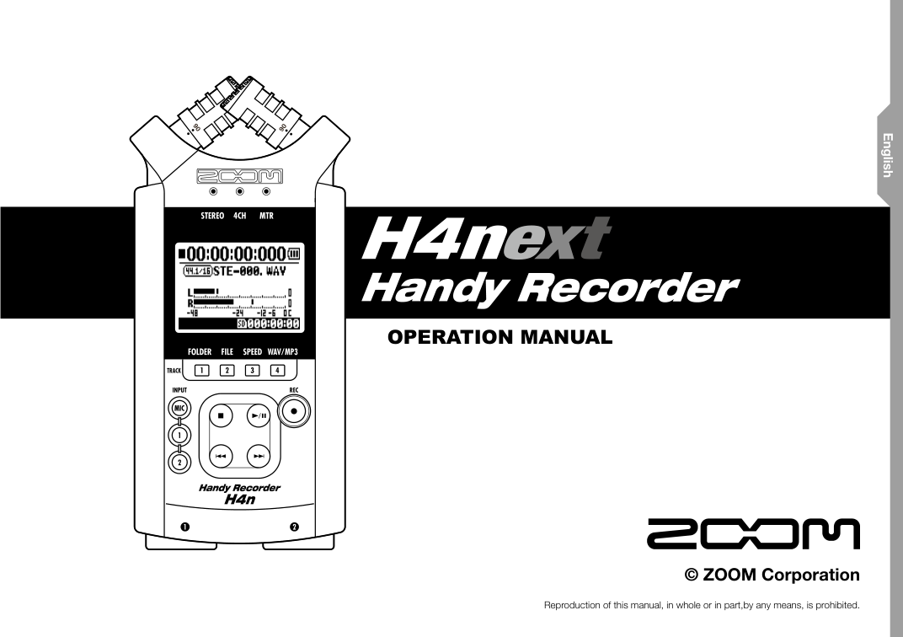

STAMINA 一定要關
這不是建議，是強迫。STAMINA 是省電開關，一旦打開，phantom power 就無法啟動，能錄的格式也會被砍到很小——對電影電視來說那個格式根本不能用。為了省一點電，讓後面所有工作都做不了，非常不划算。
這一頁照著上課示範的順序走：組裝 → 設定 → 選輸入 → 調電平 → 錄音回放。H4n 是舊機，每一步都要自己手動確認；它不會替你把事情做對，但它會誠實地把你做錯的地方錄下來。

其他都可以現場再查，這三件事錯了，整場戲的聲音就救不回來。上課示範裡老師講得最重的也是這三件。
這不是建議，是強迫。STAMINA 是省電開關，一旦打開，phantom power 就無法啟動，能錄的格式也會被砍到很小——對電影電視來說那個格式根本不能用。為了省一點電，讓後面所有工作都做不了，非常不划算。
上過這門課就知道，錄音一定要在 48 kHz、24 bit 以上。H4n 的最高規格剛好就是 WAV 48 kHz / 24 bit，所以進選單直接選滿，不要猶豫。
錄音電平大致要推到 −12 dB 左右，對話尤其要夠。H4n 不是非常專業的錄音機，你錄太小就是給自己找麻煩，後期拉起來連底噪一起拉。寧可稍微錄大一點點。
由上而下、由左至右，把 H4n 身上每一個東西認一遍。之後所有操作講到「右側的 REC LEVEL」「左側的耳機孔」，你要能直接摸到。
開機之前只有兩件事：把電池裝對，把卡插對。這兩件看起來最不重要，卻是現場最常出事的地方。
打開電池蓋，你會看到電池槽裡有一條布（拉帶）。裝電池時要讓電池壓在布上面——之後要換電池，拉一下布，電池就彈出來了。如果電池壓在布下面，你在現場會拿指甲跟它奮鬥很久。
H4n 用的是 兩顆 AA 三號電池，而且必須是鹼性電池——包裝上寫 alkaline 的那種。
鹼性電池才有辦法驅動比較吃電的電子產品。這不是挑剔，是必要條件：電力不夠時，phantom power 一開就可能出狀況。
電池蓋附近有一個開關叫 STAMINA，它是省電開關。老師的說法很直接：這不是建議，是強迫不能開。
為了省一點電，讓你之後所有的工作都不能做，這是一件很恐怖的事。確認它在 OFF，再蓋回電池蓋。
H4n 是十幾年前的機器（2021 年示範時已經約 12、13 年）。它的讀卡邏輯跟現在的卡片規格差很多。
從左側邊緣推開電源。進 MENU（右側那顆），用滾輪上下找選項、往下壓選擇。基礎設定其實只有這三條路徑。
目的是讓卡片變成 H4n 讀得懂的格式。新卡、別台機器用過的卡、或是卡片行為怪怪的時候，都先格式化一次。
格式化會清空卡片，動手前先確認舊檔案已經備份。
進去選第一個就對了。老師堅持錄音一定要在 48 kHz / 24 bit 以上，而 48 kHz / 24 bit 剛好就是 H4n 的最高規格，所以直接選滿。
機身正面左邊那排 INPUT 鍵。按 MIC 就是用機頂那兩支內建麥克風；按 1、2 就是走底部的 INPUT 1 / INPUT 2 外接麥克風。
這是整台機器最容易按錯的地方：按錯了，你會對著螢幕納悶「為什麼麥克風沒聲音」，其實機器正在認真地錄別的東西。
| 你要錄什麼 | 按哪個 INPUT | 麥克風 | 現場提醒 |
|---|---|---|---|
| 環境音、空景、room tone | MIC | 機頂內建 XY | 影視系同學最常拿它出去錄環境音。手不要摩擦機身，戶外一定要上防風罩。 |
| 近距離訪談、一個人講話 | MIC | 機頂內建 XY | 錄音機要靠近受訪者，不要放在桌子中間。也適合錄一個人彈吉他這種簡單素材。 |
| 現場對白（正式拍攝） | 1 · 2 | Shotgun 接 INPUT 1、無線／mini mic 接 INPUT 2 | 兩路分開錄、分開調電平。這是本課程的主要流程。 |
| 微型 3.5mm 外接麥克風 | MIC 系統 | 機背 3.5mm 孔 | 要用的話，必須在 MENU 內把 plug-in power 開啟，否則沒有聲音。 |
這是整堂課最重要的觀念。耳機音量調到 0，你什麼都聽不到，但機器可能正在很大聲地錄音。兩個旋鈕在機身的兩側，也代表兩件完全不同的事。
先讓演員用正式的音量講台詞，boom 或 lav 也放在正式位置，再開始調 REC LEVEL。
H4n 的錄音鍵是兩段式的。很多人第一次用會以為已經在錄了，其實還停在預備狀態；也有人以為還在測試，結果整段都錄了進去。
輕按一次錄音鍵，它只是在測試——standby。紅燈會閃爍，代表預備中。
這個狀態很好用：耳機已經聽得到聲音了，你可以放心在這裡把 REC LEVEL 調好，還沒有任何東西被寫進卡片。
再按一次錄音鍵，才是正式錄音。確認紅燈恆亮、螢幕上的時間開始跑。
螢幕上方會顯示檔號，例如 STE-000。錄完停止，下一次進 standby 就會變成 STE-001，依序往下。
按方塊狀的停止鍵結束錄音，然後按 PLAY 回放，用耳機確認這一段真的錄進去了。
回放時聽：對白清不清楚、有沒有爆音、有沒有風聲、有沒有衣服摩擦。有問題就趁現場還在的時候重錄。
整理自課堂講義。左邊是只用內建麥克風（錄環境音、訪談）；右邊是接外接麥克風（正式拍攝對白）。手機開著這一段，一步一步做。
錄環境音、空景、近距離訪談、簡單樂器素材。
menu → SD CARD → FORMATmenu → rec → rec format → wav 48kHz 24bit正式拍攝現場對白。H4n 最多可同時外接兩支麥克風。
menu → input → phantom → 將 48V 打勾。1/2 LINK = OFF、MONO MIX = OFF（只接一支麥克風時才考慮開 MONO MIX）。menu → SD CARD → FORMATmenu → rec → rec format → wav 48kHz 24bit每次借機都照著念一遍。念完再開錄，你就不會在回家路上才發現整場沒錄到。
陳嘉暐老師 2021 年錄製的同步錄音基礎教學，播放清單「義守初階同步錄音」共 5 部影片，可以從第一部連續看完。其中第三集就是這一頁的 H4n 示範，看完再回來照流程檢查自己的機器。